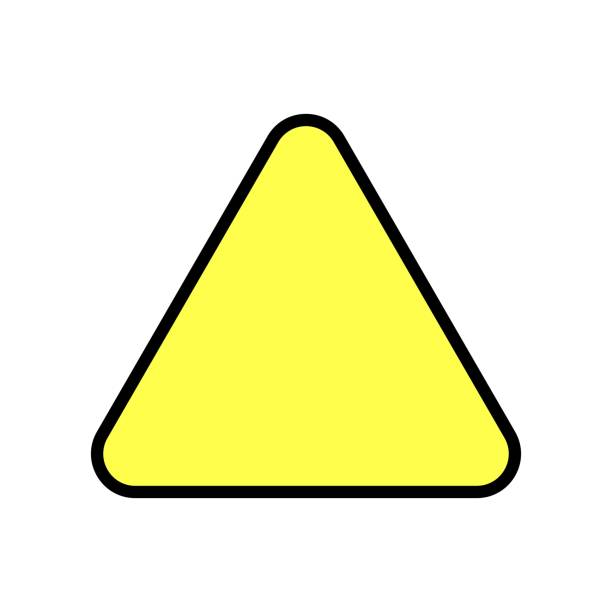
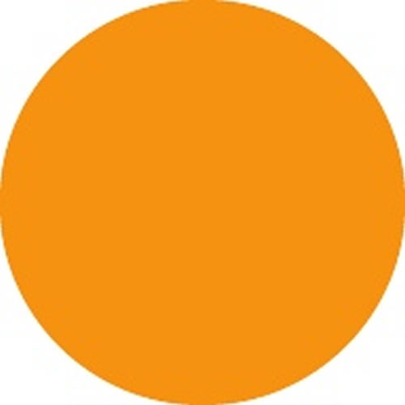

Play Speeds
There are three play speeds that each card could have: Action, Queue, and Instant. They will impact how many cards you can play on a given turn.
Action

Once a card with an Action speed is played, that player's turn will automatically end.
Queue 
Once a card with a Queue speed is played, that player can continue playing cards, but that card's effect will not activate until the amount of turns has passed equal to the Queue value on the card. Essentially, the queue value acts as a sort of countdown.
Instant 
Once a card with an Instant speed is played, that card's effect will activate immediately and not end that player's turn.
Card Types
There are three types of cards: Unit, Spell, and Structure.
Unit
These cards remain on the board and have Power and Health. Typically, they will remain on the board until their Health reaches zero.
Spell
These cards don't remain on the board. Once they resolve their effect, they will be removed.
Structure
These cards remain on the board and only have Health. They remain on the board until their Health reaches zero.